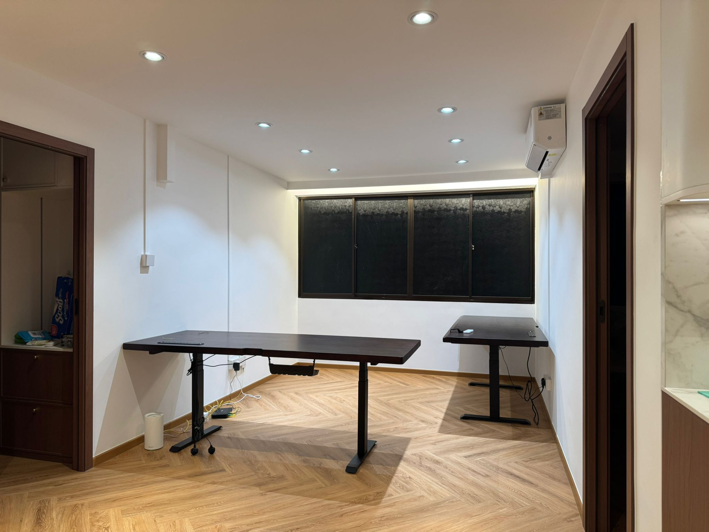

False ceilings & cove lighting in HDB flats: costs and options

Thinking about a false ceiling with cove lighting for your HDB flat? In Singapore, a slim perimeter cove or L-box typically starts from around $18–$30 per foot run, while a full boxed-up gypsum ceiling for a room often lands between $1,500 and $3,500+ depending on size, design and lighting. The big trade-off is height: most HDB flats have about 2.6m to play with, and a false ceiling will eat into that. This guide walks through your options, the costs, how it hides aircon trunking and wiring, plaster versus gypsum board, downlights versus cove, the SCDF smoke-detector point most people forget, and how to keep maintenance access.
What a false ceiling actually does
A false ceiling is a second ceiling built below the original concrete slab, usually from gypsum board on a light metal frame. In an HDB flat it does a few jobs at once: it hides the aircon trunking, refrigerant pipes and condensate drainage that run along the wall after a fan-coil unit is installed; it conceals electrical wiring for new lighting; and it gives you a clean recess to tuck LED strips into for cove lighting.
It overlaps with general ceiling and drywall work — the same crew that boxes up your aircon ledge often builds the cove, installs the downlights and patches and skims the surface ready for paint.
Your options, compared
You don't always need a full ceiling. Most HDB homes pick one of four approaches, depending on what they're trying to hide and how much height they can spare. The ranges below are indicative of the Singapore market in 2026 — treat them as a starting point and confirm a fixed quote after a site visit.
| Option | Indicative cost (SGD) | Height loss | Look & best use |
|---|---|---|---|
| Full false ceiling (whole room) | $1,500 – $3,500+ | ~150 – 250mm | Clean flat ceiling, hides ducting fully; living/dining feature |
| Partial / L-box (perimeter) | From $18 – $30 per ft run | ~100 – 200mm at edges only | Hides aircon trunking along one or two walls; keeps centre height |
| Cove lighting recess | From $20 – $35 per ft run | ~100 – 150mm at the cove | Soft indirect glow; mood lighting around the room edge |
| Cornice / plaster trim | From $8 – $15 per ft run | Negligible | Decorative edge only; no concealment or lighting |
A common HDB combination is a perimeter L-box with a cove on its inner edge — it hides the aircon trunking along the wall, holds an LED strip for ambient light, and keeps the centre of the ceiling at full height so the room doesn't feel low.
If your only goal is to conceal the aircon pipes, you rarely need a full ceiling — a partial L-box on the affected wall does the job for far less, and saves the height. Save the full false ceiling for when you want a flat, seamless look across the whole room, or need to run downlights and ducting across the centre. Cornices are purely decorative: they soften the wall-to-ceiling edge but hide nothing and carry no lighting, so think of them as trim rather than a concealment option.
Height: the thing to decide first
Most HDB flats give you a floor-to-ceiling height of roughly 2.6m. That feels generous until you start dropping a ceiling under it. A few practical notes:
- A slim cove or edge L-box loses around 100–200mm, and only at the perimeter — the room still feels open.
- A full boxed ceiling that has to clear aircon ducting can drop the whole room by 150–250mm, which is noticeable on a 2.6m ceiling.
- Lower ceilings can feel cosier or more cramped depending on room size — in a small bedroom, prefer a perimeter design over a full drop.
- The aircon installer's pipe route often dictates the minimum drop, so plan the ceiling and aircon together rather than separately.
Hiding aircon trunking and wiring
For most HDB homes, this is the real reason a false ceiling goes in. After a system aircon is fitted, the refrigerant pipes, drainage and trunking run along the top of the wall — functional, but not pretty. A false ceiling or L-box boxes all of that out of sight, and at the same time conceals the new lighting wiring so you don't see surface conduit.
The key is to coordinate. Tell whoever builds the ceiling where every fan-coil unit, drain point and electrical junction sits, so the ceiling is built at the right level and with service openings in the right places. Closing up a ceiling over an unmarked drain pipe is the classic mistake that means cutting it open again later.
Plaster or gypsum board?
Nearly all modern HDB false ceilings use gypsum (plasterboard) panels fixed to a galvanised metal frame, then skimmed and painted. Traditional wet plaster is rarely used for new ceilings today. Here's why gypsum wins for homes:
- Lighter and faster. Less load on the structure and a quicker install than building up wet plaster.
- Easy to repair. A damaged section can be cut out and re-boarded without redoing the whole ceiling.
- Clean for lighting. Downlight cut-outs and cove recesses are simple to form in board.
- Moisture-resistant grades are available for kitchens, near wet areas or anywhere with humidity.
Plaster cornices still have a place as a decorative trim, but for the structure of the ceiling itself, gypsum board is the practical default.
Downlights vs cove lighting
These do different jobs, and most well-lit HDB rooms use both rather than choosing one.
Cove lighting
An LED strip hidden inside the recess or L-box that washes light up or along the ceiling. It gives a soft, indirect glow and a sense of depth — good for ambient, relaxed lighting in a living room or bedroom. On its own it's mood lighting, not task lighting.
Downlights
Recessed spotlights set into the ceiling face for direct, focused light. Use them over a dining table, kitchen worktop, study or reading spot where you actually need brightness. Plan the positions before the ceiling is built so the cut-outs and wiring land where the furniture will be.
Pairing both — cove for the overall mood, downlights for the work areas — usually gives the most flexible result, ideally on separate switches so you can dim the room down to just the cove in the evening.
Don't bury the smoke detector (SCDF)
This is the point most people forget. HDB flats have a home fire alarm device, and any smoke detector needs to stay unobstructed and correctly positioned to actually work. If you build a false ceiling below it, the detector must be relocated or remounted onto the new ceiling surface — never simply boxed over.
Fire-safety requirements for detection devices are set out by the Singapore Civil Defence Force (SCDF), and a competent ceiling contractor will plan the detector relocation as part of the job, not as an afterthought. If you're doing wider renovation works, also check the current rules with HDB before you start.
Leave yourself maintenance access
Once a ceiling is closed up, anything above it is out of reach unless you planned for it. Build in access from the start:
- Mark every serviceable item — aircon fan-coil units, drainage pipes, electrical junction boxes — before the board goes up.
- Ask for removable panels or a service opening over those points, so a technician can reach them without cutting the ceiling.
- Keep cove LED strips and drivers accessible too, since strips and transformers do eventually need replacing.
- Note where the access points are so you remember them years later when something needs servicing.
Getting it done by RK E&C
RK E&C is a Singapore-registered renovation and ceiling specialist (UEN 202442767D) building false ceilings, L-boxes, cove lighting and gypsum partitions in HDB flats and condos island-wide — as a standalone job or alongside painting, drywall and renovation works. We plan around your aircon trunking, relocate the smoke detector, build in service access, and give a fixed price before we start.
If you're also budgeting the wider job, our guides on HDB painting cost and HDB renovation cost are a useful starting point. Send us a photo of your space and your postal code and we'll quote you — usually the same day.
Planning a ceiling and cove?
Send us photos and your postal code. Fixed-price quote, aircon trunking concealed and detector relocation handled, island-wide.
Prices are indicative of the Singapore market in 2026 and not a quotation. Confirm a fixed price with your provider before work begins.